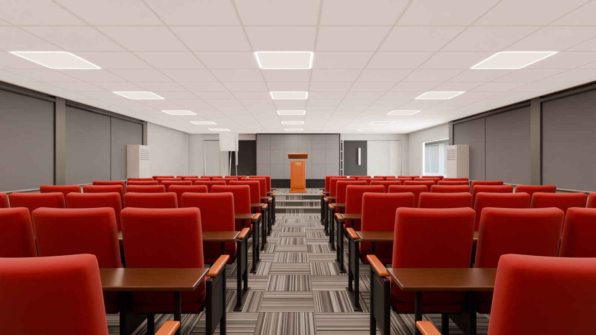
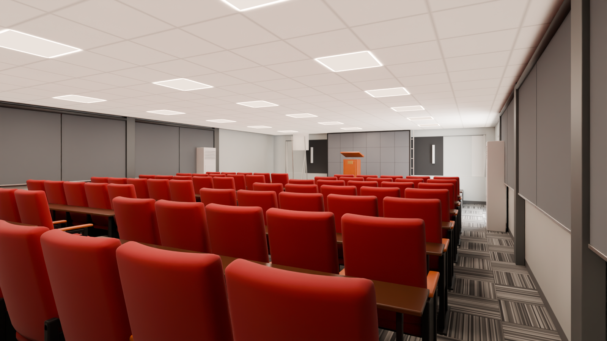
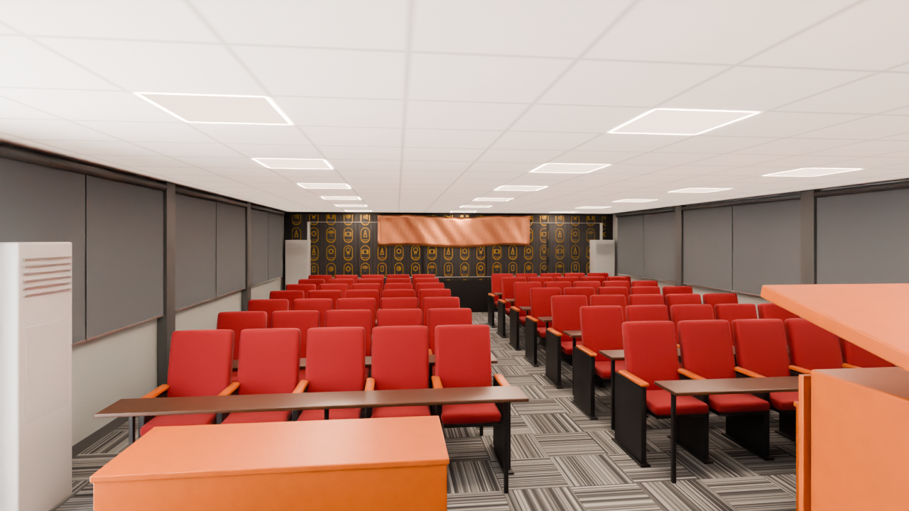

Auditorium — National ICT Innovation Hub
The Hub's auditorium, a separate block south of the main building. In the photos it is a double-height hall (about 6.5 m) with clerestory windows and two tiers of grey roller blinds on the long sides, a carpeted stage with an LED video wall on a charcoal wall, a timber lectern, about 400 red velvet theatre seats with timber writing ledges, and a back wall of gold cartouches on dark panels with a copper scroll banner. The model block is single storey (soffit 2.44 m) and about a third of the real floor area, so the room is furnished at REAL scale with what fits: a 2.6 m stage, 7 rows of 10 seats, one tier of blinds, and an LED wall cut to the 2.44 m ceiling. Everything dropped or reduced is listed below.
Zone: X -7.29..+5.80, Y -13.26..-5.04 (clear 12.95 x 8.08 m between the faces), soffit 2.44 m - the separate block south of the main building. Each angle: the reference photo, the shell (model with materials and light only) and the furnished scene. The original meshes are untouched; no render contains people.
1 draft2 final
Zone check and photo mapping
high confidence - the only room in this block; the model matches the plan box within 0.1 mPlan: the 'Auditoruim' label (1,153 sq ft) sits in a separate block south of the main building, plan px x 290..614, y 458..663 -> X -7.2..+5.8, Y -13.5..-5.2. Ray casts on the GLB: west face X -7.22, east face X +5.73, north face Y -5.11, south face Y -13.19 (12.95 x 8.08 m = 105 m2, the plan label says 107 m2), flat floor at 0.00, soffit 2.44 m, roof 2.7 m, no columns or obstacles inside. Glazing on the two SHORT walls only: west Y -12.21..-5.82 and east Y -12.50..-6.11, sill 0.92, head 2.17. One doorway in the north wall near the west end, X -5.9..-3.8, head about 2.2 m. The photos show a much bigger, double-height hall (clerestories and blinds on the long walls, about 400 seats): the model is about a third of the real area and height. As with every room, the model geometry is kept and the furniture is real scale: the stage goes to the west end (the doorway is beside it, as the side doors are in photos 240/248), the mural to the east end; both end walls are lined, since the photos show them solid.

| Photo | Where it looks | Angle |
|---|---|---|
| 230 / 231 / 232 / 237 | West: stage, LED wall, lectern, centre aisle between the seat blocks | 01 |
| 229 / 234 / 235 / 236 | North-west and diagonal: blinds on the long walls, seat rows, stage in the corner | 02 |
| 243 / 244 / 245 / 246 / 247 / 249 / 250 | East from the stage: seat blocks, front tables, cartouche mural, copper scroll, AC units | 03 |
| 233 | Detail: AC cabinet and the mural edge (east corner) | detail |
| 240 / 248 | Detail: side door, AC cabinet, stage steps (west corners) | detail |
| 232 | Byte-identical duplicate of 232(1) | not used |
Down the centre aisle to the stage
photo Hub Space-230.jpg, Hub Space-231.jpg, Hub Space-232(1).jpg, Hub Space-237.jpgFrom the back of the centre aisle, looking west: the two seat blocks with their writing ledges, the front tables, the stage with the lectern and the LED wall on the charcoal stage wall.
 Photo Hub Space-230.jpg
Photo Hub Space-230.jpg
FurnishedFrom the back corner, diagonally to the stage
photo Hub Space-229.jpg, Hub Space-234.jpg, Hub Space-235.jpg, Hub Space-236.jpgFrom the north-east corner: the blinds on the long wall, the rows of red seats and the stage in the far corner.
 Photo Hub Space-229.jpg
Photo Hub Space-229.jpg
FurnishedFrom the stage to the mural wall
photo Hub Space-243.jpg, Hub Space-244.jpg, Hub Space-245.jpg, Hub Space-246.jpg, Hub Space-247.jpg, Hub Space-249.jpg, Hub Space-250.jpgStanding on the stage beside the lectern, looking east over the seats to the gold cartouche mural and the copper scroll.
 Photo Hub Space-243.jpg
Photo Hub Space-243.jpg
FurnisheddraftWhat differs from the photos (ranked)
- Not reviewed yet.
Dropped at real scale
| Item | Why |
|---|---|
| About 330 of the ~400 theatre seats (photos 230/245) | 7 rows x 10 seats at real size (0.53 m seat pitch, 1.05 m row pitch with the writing ledge) fill the 12.95 x 8.08 m model room with a centre aisle, two side aisles and the stage |
| Double height, clerestory windows and the upper tier of blinds (photos 229/234/235) | the model block is single storey: soffit 2.44 m; one tier of blinds is kept on the long walls |
| LED wall at its real size (about 5.0 x 2.9 m, photo 237) | reduced to 3.0 x 1.62 m so that it fits between the 0.45 m stage and the 2.44 m ceiling - the only item not at real scale |
| Stage depth (about 4.5 m in photos 240/247) | 2.6 m at the west end, so that seven rows still fit; full-width front steps reduced to the centre steps |
| Raked rows on low risers (photo 247) | flat floor kept: the model floor is flat and a raked floor would need geometry |
| Second lectern by the side door and the catering table (photos 229/248) | the north side aisle by the doorway is needed as the way in |
| Ceiling speakers, CCTV, fire panels, wall sockets | too small to read at this scale |
| Laptops, bags, plates, bottles | personal items; no people in any render |
Free camera
Files and last updated
| File | Kind | Size | Modified |
|---|---|---|---|
| 01_toward_stage_furnished.png | final | 1.5 MB | 2026-10-05 05:51 |
| 02_back_corner_furnished.png | final | 1.4 MB | 2026-10-05 06:03 |
| 03_from_stage_furnished.png | DRAFT | 1020.4 KB | 2026-10-04 23:45 |
| walkbaked/index.html | free-camera page | 56.7 KB | 2026-10-05 00:04 |
Render settings
- Room
- Auditorium - X -7.29..+5.80, Y -13.26..-5.04, soffit 2.44 m (model) - real hall about 6.5 m high
- Renderer
- Blender 4.2 LTS, Cycles, CPU only (i5-10505)
- Draft settings
- 1280 x 720, 32 samples, OIDN (finals 1600 x 900, 256 samples)
- Ceiling lights
- 21 square LED panels 600 x 600 in the 600 grid, 5000 K, camera-visible emission kept below the AgX white point; soft ceiling fill
- Daylight
- None through the model's end windows: in the photos the stage wall and the mural wall are solid, so both are lined; the long-wall glazing of the real hall does not exist in the model
- Tone mapping
- AgX, Medium High Contrast, exposure -0.22 (same as the Reception)
- Furniture
- Real scale, nothing shrunk except the LED wall, which is cut to the 2.44 m ceiling (listed)
- Seats
- Instanced theatre seats (one mesh, 70 linked copies) and shared arm standards
- People
- None, by design